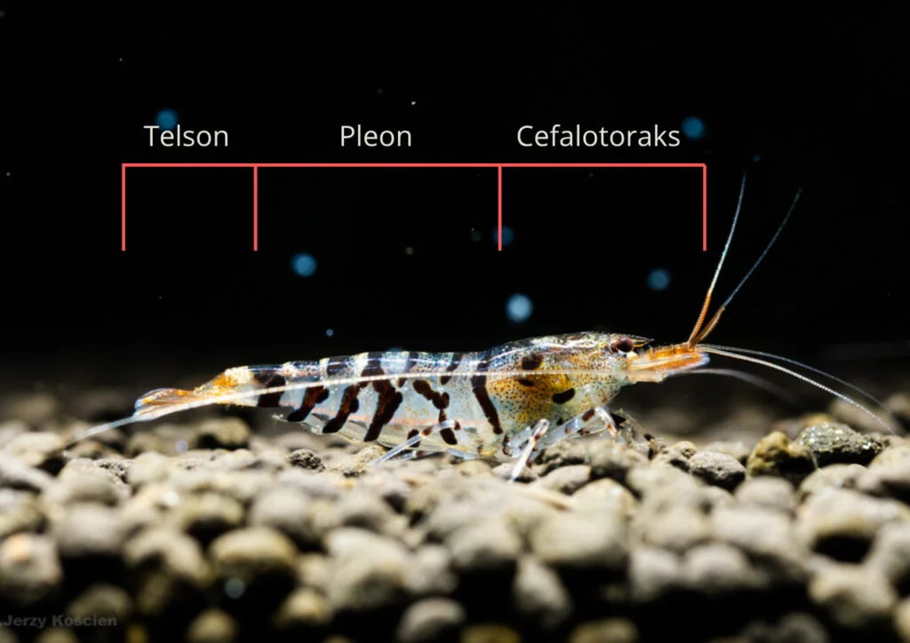
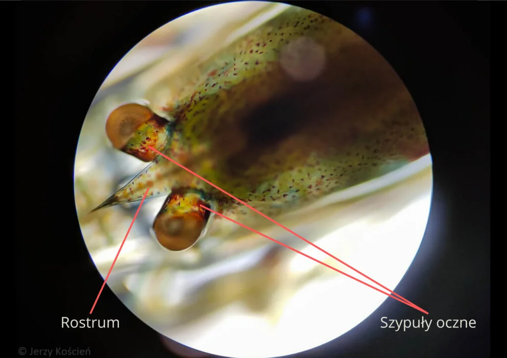
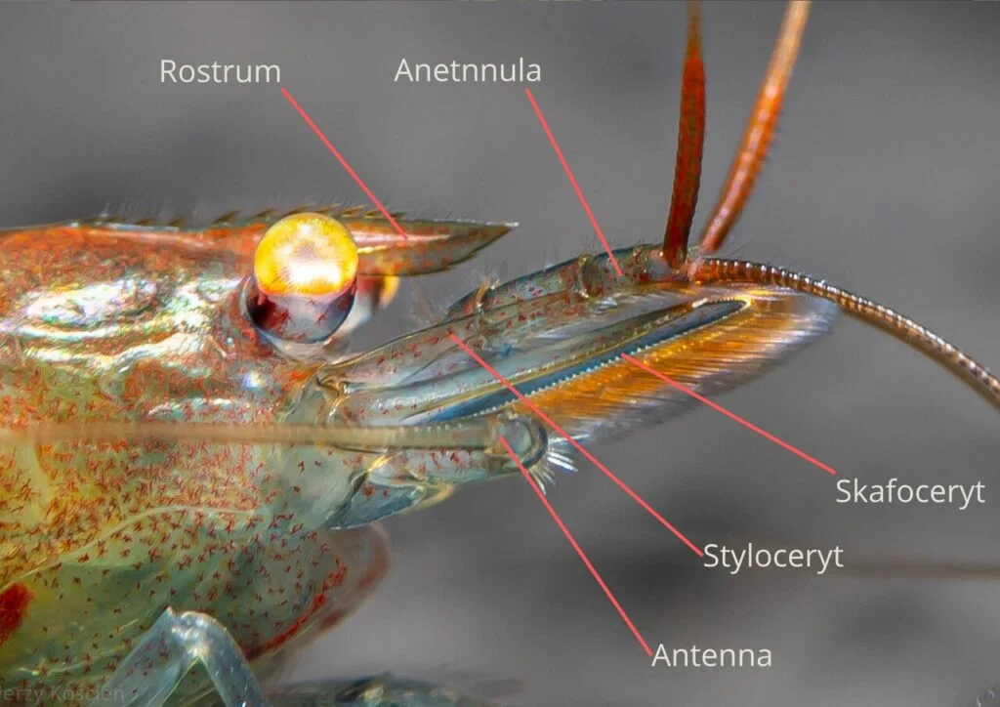
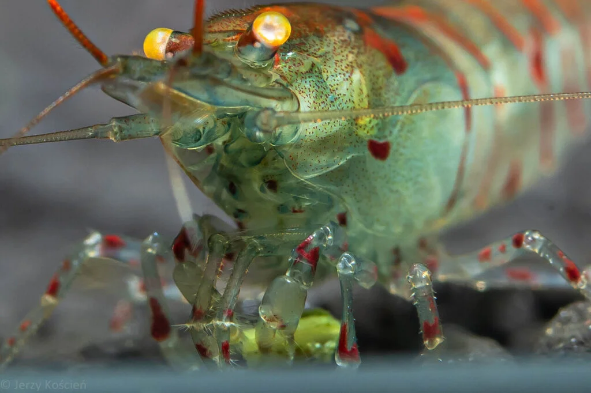
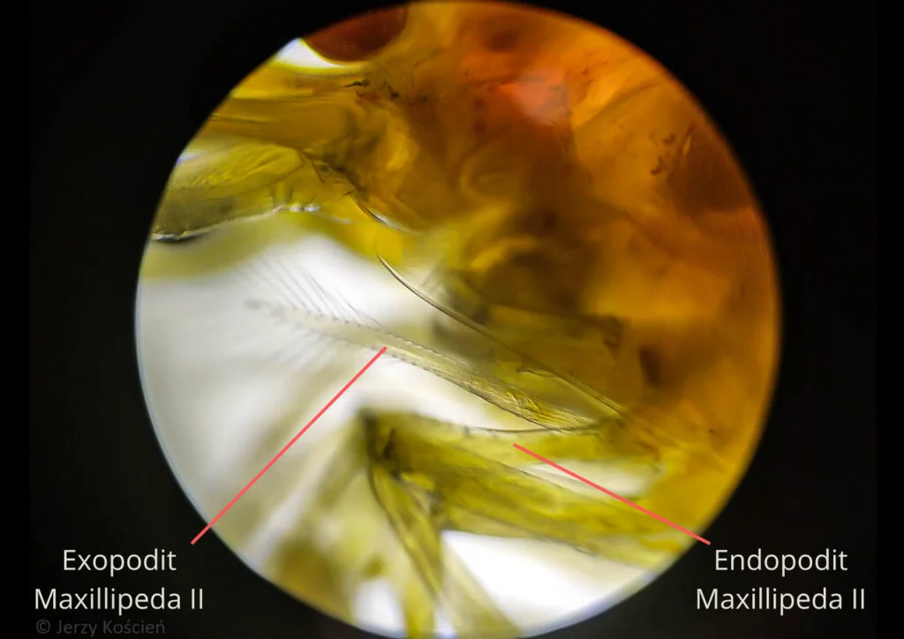
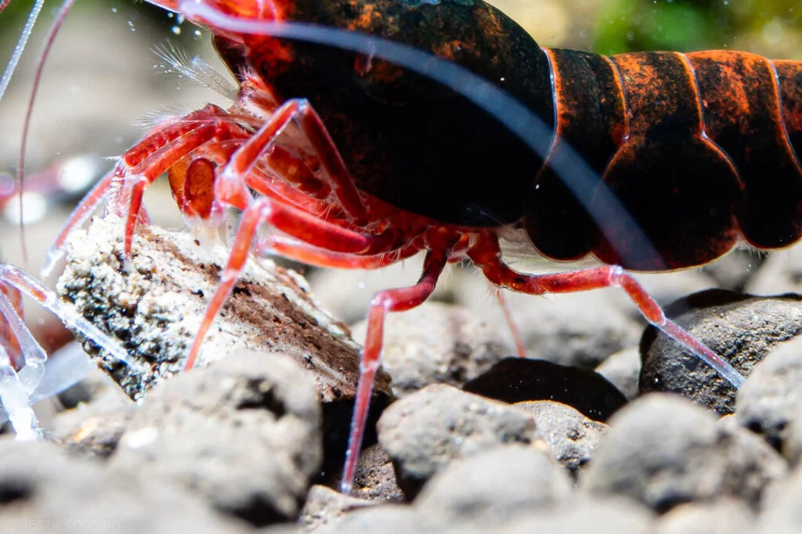
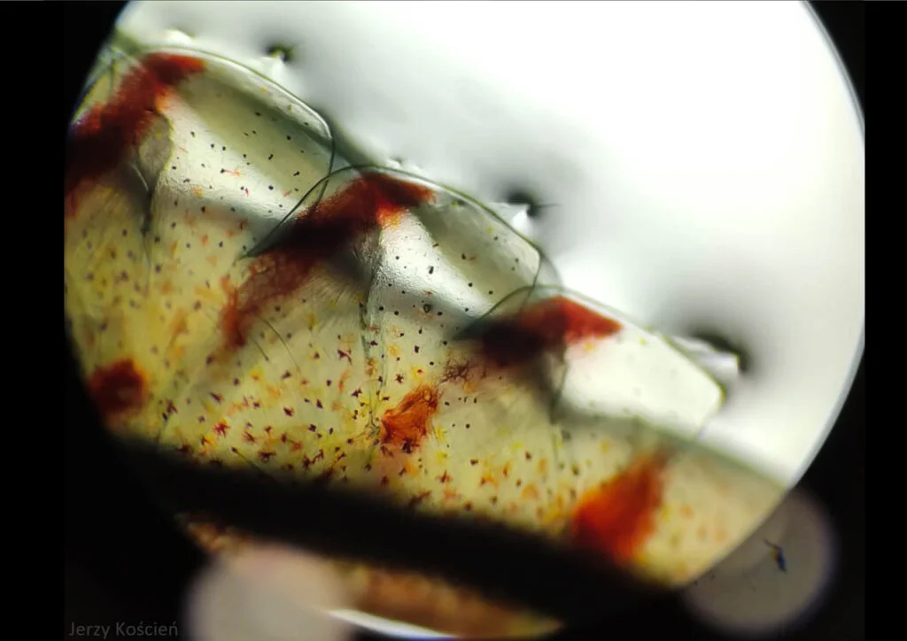
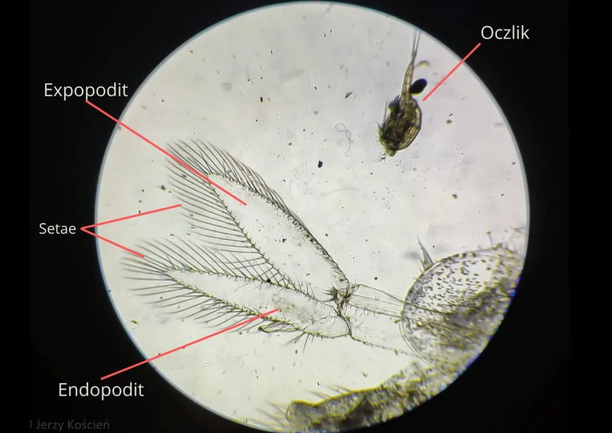
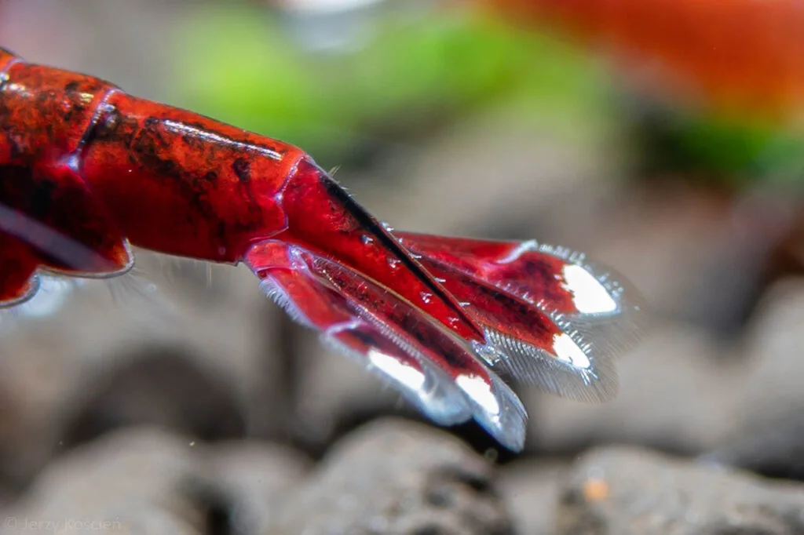

Podstawowe fakty o krewetkach
anatomia krewetki
Żeby zdefiniować czym dokładnie jest krewetka, warto będzie najpierw poznać jak i dlaczego jest ona zbudowana w opisany poniżej sposób. Słowem wstępu krewetki (Caridea) są to morskie i słodkowodne skorupiaki z rzędu dziesięcionogów. Krewetek na świecie opisano około 2500 gatunków, klasyfikowanych w 14 (wyróżnionych przez World Register of Marine Species) nadrodzinach.
Ciało krewetki składa się z trzech głównych części:
- Głowotułów (cefalotoraks)
- Odwłok (pleon)
- Ogon (telson)

*Psst! Naciśnij nazwy części!
Cefalotoraks
Jest to przednia część ciała krewetki, która wynika z połączenia głowy i tułowia. Zawiera w sobie większość ważnych narządów wewnętrznych, takich jak: mózg, serce, żołądek, skrzela oraz przyczepy odnóży. Składa się z kilku zrośniętych ze sobą segmentów, tworząc karapaks, który jest częścią egzoszkieletu krewetki i chroni jej narządy.
Części cefalotoraksu
Oczy Oczy krewetki składają się z szypuł ocznych oraz oczu złożonych. Mają one ciemne zabarwienie i kulisty kształt. Szypuły umożliwiają krewetce poruszanie oczami, przy czym zawierają też neurony oraz gruczoły hormonalne.

Rostrum Rostrum jest mieczowatym wyrostkiem między oczami krewetek. Jego kształt i liczba ząbków na górnej i dolnej krawędzi służą rozróżnianiu gatunków i określaniu przynależności do grup.
Czułki Krewetki mają dwie pary czułków, które służą im do odbierania bodźców z otoczenia. Antennule - to pierwsza para czułek, która pozwala krewetkom wykrywać pokarm, dzięki chemoreceptorom i komórkom dotykowym. Antenna - to druga para, dzięki niej krewetki mają zmysł dotyku i węchu. Zewnętrzna część rozszerza się w skafoceryt, który wspomaga równowagę.

Aparat gębowy Krewetka ma żuwaczki i dwie pary szczęk, którymi rozdrabnia i przesuwa jedzenie w kierunku otworu gębowego. Poza szczękami posiada również trzy pary szczękonóży - pierwsza z nich jest szeroka i płatowata, służąc do manipulowania i czyszczenia jedzenia, druga para służy do czyszczenia skrzeli, a trzecia przypomina odnóża kroczne i stanowi przejście, między aparatem gębowym a kończynami.


Odnóża Odnóża kroczne (preopody) znajdują się symetrycznie po obu stronach głowotułowia. Służą poruszaniu się i wspinaniu. Każde z odnóży składa się z kilku połączonych ze sobą segmentów - dwa najbliższe ciału są podstawą pozostałych części, a dalsze segmenty odpowiadają za ruch. Końcowy segment (dactylus), jest takim jakby pazurkiem krewetki. Samych w sobie odnóży jest pięć par, z czego dwie pierwsze pary są szczypcowe, natomiast pozostałe trzy służą poruszaniu się.

Pleon
Pleon to odwłok krewetki. Składa się on z sześciu segmentów brzusznych - do pierwszych pięciu z nich przyczepione są pleopody. W odwłoku krewetki znajdują się również niektóre z narządów. Sam odwłok jest silnie umięśniony, gdyż musi umożliwiać pływanie i szybkie ruchy ogonem. Wspomniane wcześniej pleopody, to pary odnóży pływnych, które służą krewetce do poruszania się w wodzie. U samic służą także do przenoszenia i wachlowania jaj. Są one widoczne przeważnie, kiedy kewetka wykonuje jakąś z tych czynności.


Telson
Ciało krewetki zakończone jest ogonem - czyli właśnie telsonem. Do telsonu przyczepione są cztery uropody, które pomagają krewetce sterować podczas pływania. Krewetka może gwałtownie uderzać swoim wachlarzem ogonowym, co sprawia, że jest w stanie odrzucić sie do tyłu. Jest to typowy mechanizm ucieczki, wykorzystywany w razie zagrożenia.


Środowisko i pokarm
Krewetki zamieszkują wszystkie rodzaje środowiska wodnego, a około jedna czwarta z opisanych gatunków zasiedla wody słodkie. Występują one na wszystkich kontynentach z wyjątkiem Antarktydy. Niektóre z gatunków morskich żyją na głębokościach nawet do 5000m. Jeden z gatunków - krewetka nakrapiana - pojawił się w Odrze, a kilka gatunków żyje również w Bałtyku.
Większość krewetek jest wszystkożerna, jednak część z nich pozostaje ograniczona co do poszczególnych sposobów pobierania pokarmu. Dla przykładu krewetki z rodzaju Alpheus używają mechanizmu ogłuszania zdobyczy, poprzez tworzenie fali uderzeniowej w skutek zaciskania przez nie szczypców., krewetki Amano żywią się zeskrobanymi ze skał glonami, a krewetki Atyopsis filtrują pokarm za pomocą zmodyfikowanych odnóży.